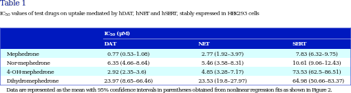

corpus-oa-validation/10.1111_bph.13547/tables/table2/table.svg.png
|
| Mephedrone Nor-mephedrone 4-OH-mephedrone |
0.052 (0.036–0.075) 0.22 (0.14–0.32) 0.19 (0.13–0.267) |
0.09 (0.08–0.11) 0.1 (0.08–0.13) 0.15 (0.11–0.19) |
0.21 (0.17–0.26) 0.21 (0.13–0.32) 2.01 (1.390–2.91) |
| Data are represented as the mean and 95% confdence intervals in brackets obtained from nonlinear regression fts as shown in Figure 4. |
corpus-oa-validation/10.1111_bph.13547/tables/table2/table.svg.html
|
|

corpus-oa-validation/10.1111_bph.13547/tables/table1/table.svg.png
|
| Mephedrone Nor-mephedrone 4-OH-mephedrone Dihydromephedrone |
0.77 (0.53–1.08) 6.35 (4.66–8.64) 2.92 (2.35–3.6) 23.97 (8.65–66.46) |
2.77 (1.92–3.97) 5.46 (3.58–8.31) 4.85 (3.28–7.17) 23.53 (19.8–27.97) |
7.83 (6.32–9.75) 10.61 (9.06–12.43) 73.53 (62.5–86.51) 64.98 (50.66–83.37) |
| Data are represented as the mean with 95% confdence intervals in parentheses obtained from nonlinear regression fts as shown in Figure 2. |
corpus-oa-validation/10.1111_bph.13547/tables/table1/table.svg.html
|